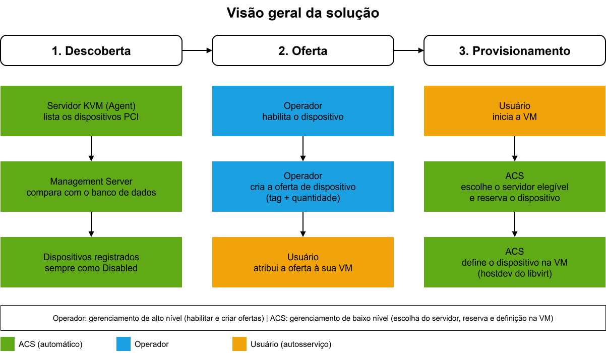
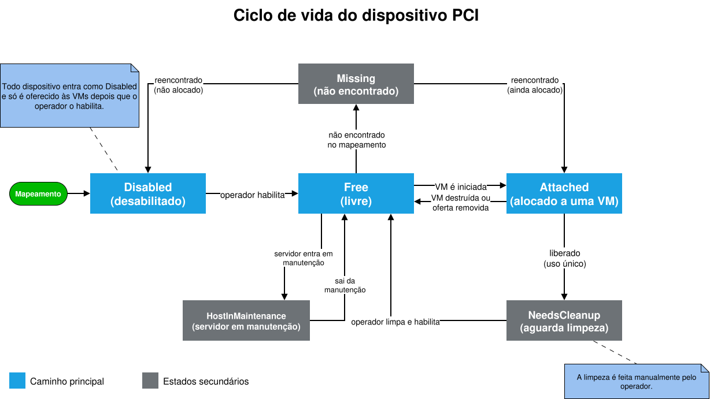
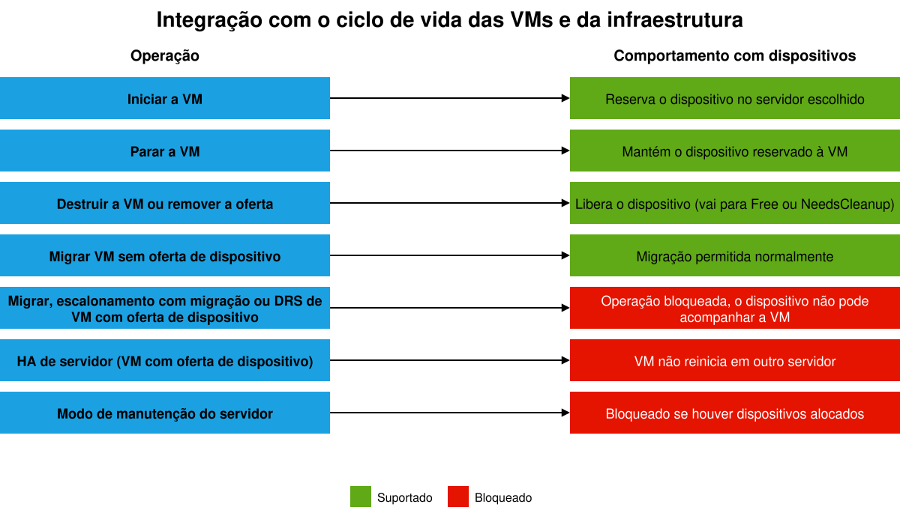
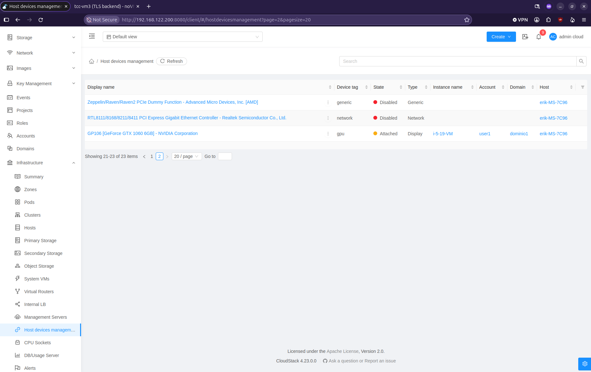
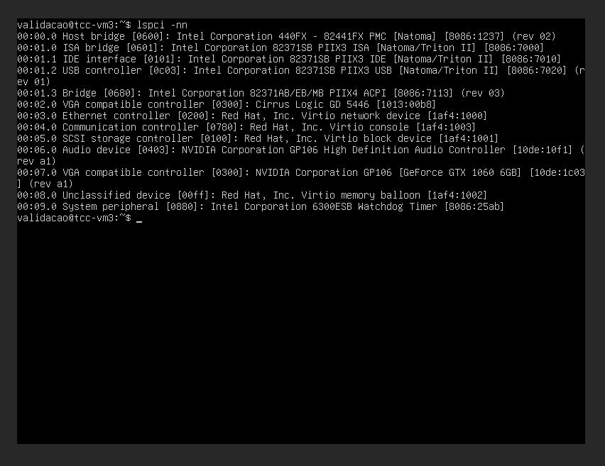

Gerenciamento nativo de dispositivos PCI no Apache CloudStack para servidores de virtualização KVM
Trabalho de Conclusão de Curso
Curso Superior de Tecnologia em Gestão da Tecnologia da Informação
Erik Böck da Silva
Orientador: Prof. Dr. Lucas Bueno
Coorientador: Bel. Daniel Augusto Veronezi Salvador
IFSC, Câmpus Florianópolis, 2026
Conceitos abordados
- Apache CloudStack (ACS): plataforma de código aberto para orquestrar nuvens de infraestrutura.
- KVM (Kernel-based Virtual Machine): virtualizador do Linux que executa as máquinas virtuais (VMs).
- Dispositivos PCI: GPUs, discos NVMe, placas de rede...
- Repasse de dispositivos (PCI passthrough): a VM usa o dispositivo físico diretamente, em vez de um dispositivo emulado.
O problema
- Sem o repasse nativo de dispositivos PCI no ACS, exceto para GPUs (desde a versão 4.21).
- O operador precisa editar manualmente a definição XML da VM no libvirt, servidor por servidor.
- A definição XML da VM não é persistente, porque as VMs criadas pelo ACS são efêmeras.
- A alternativa
extra configfoi desativada pela vulnerabilidade CVE-2024-29008. - Sem controle central não há autosserviço para o usuário e operações como migração, alta disponibilidade (HA) e manutenção não reconhecem o vínculo com o hardware.
Pergunta e objetivo
Objetivo geral: projetar, implementar e avaliar o suporte nativo ao mapeamento e ao provisionamento automatizado de dispositivos PCI no ACS para KVM, por meio de ofertas de dispositivo (device offerings) integradas ao ciclo de vida das VMs.
Implementações relacionadas
| Solução | Dispositivos | Descoberta | Meio de consumo |
|---|---|---|---|
| ACS 4.21 | GPUs | Automática | Oferta de computação |
| OpenStack Nova | Qualquer PCI | Declarada por servidor | Flavor com alias e quantidade |
| OpenStack Cyborg | Qualquer PCI (Aceleradores) | Por drivers | Perfil no flavor |
| OpenNebula | Qualquer PCI | Filtrada por configuração | Template da VM |
| Proxmox VE | PCI e USB | Mapeada pelo operador | Endereço ou mapeamento na VM |
| Este trabalho | Qualquer PCI | Sob demanda e periódica | Oferta de dispositivo (tag + quantidade) |
Metodologia
Design Science Research (DSR), pesquisa orientada à criação e avaliação de um artefato. Aqui, o artefato é um protótipo funcional integrado ao código-fonte do ACS.

O que foi criado
tabelas novas no banco de dados: dispositivos, ofertas e suas relações.
APIs novas para gerenciar dispositivos e ofertas, com eventos para auditoria.
novo tipo de uso (HOST_DEVICE) para tarifar os dispositivos no
plugin Quota, a tarifação do ACS.
- Interface gráfica para visualizar dispositivos e gerenciar ofertas
- Limites por conta, domínio e projeto, e alertas aos operadores
- Descoberta automática dos dispositivos, manual e periódica por cluster


Decisões de projeto
Desabilitado por padrão
Todo dispositivo é mapeado inicialmente como Disabled. Isso evita alocar por engano
itens críticos do servidor.
Reservado enquanto a VM existe
O dispositivo permanece alocado à VM mesmo com ela parada. Isso garante a disponibilidade, mas prende a VM ao servidor.
Multifunção como unidade
Funções da mesma placa (ex.: GPU com vídeo e áudio) são alocadas, liberadas e tarifadas juntas.
Dispositivos de uso único
Dispositivos de armazenamento podem reter dados após a liberação. Ao ser liberado, o dispositivo fica em
NeedsCleanup até o operador limpar.
Ambiente de testes
Notebook (Dell XPS 9310)
Core i7-1185G7, 16 GB, Ubuntu 24.04
Ambiente Apache CloudStack 4.23: Management Server, MariaDB e Agent KVM
Computador pessoal
Ryzen 5 4500, 16 GB, Ubuntu 24.04
Agent KVM com GPU GTX 1060 6 GB e NVMe Kingston 240 GB
Contas dos tipos Root Admin, Domain Admin e usuário comum, em domínios distintos, para testar visibilidade e controle de acesso.
Casos de teste e evidências coletadas
- SD: cenários sem dispositivo repassável (dispositivos emulados pelo QEMU)
- CD: cenários com dispositivo repassável e com repasse efetivo (GPU e NVMe)
- Cada cenário tem um resultado esperado, definido na especificação, e é classificado como conforme ou não conforme.
- Respostas das APIs e mensagens de erro
- XML da VM (
virsh dumpxml) lspcidentro da VM- Estado dos dispositivos, eventos e alertas
- Logs do Management Server e do Agent
Resultados
- Sem repasse: 29 cenários via API, 23 conformes de primeira e 5 após correções de mensagens e de um efeito colateral. O caso de teste SD foi concluído nos testes com repasse.
- GPU e NVMe repassados com sucesso às VMs, visíveis no
lspci - Dispositivo retido com a VM parada e liberado ao remover a oferta ou destruir a VM
- Utilização da flag de uso único (estado
NeedsCleanup) e seus alertas - Operações incompatíveis bloqueadas corretamente
- Limitações de recursos (PCIs) e tarifação funcionando


lspci -nn)Análise dos resultados
passos a cada início da VM para repassar a GPU. O custo inicial é maior (de 2 para 4 passos), e o ganho vem nos inícios seguintes.
alocações duplicadas em 10 rodadas de início simultâneo disputando a única GPU. O controle de alocação foi feito pelo ACS
controle centralizado do acesso e da disponibilidade, por limites, ofertas e estados do dispositivo.
Limitações da validação
- Um só servidor com dispositivos repassáveis (1 GPU, 1 NVMe)
- Não foram realizados testes extensivos em todas as funcionalidades implementadas
- Placas de rede e USB sem repasse efetivo; NVMe só com leitura
Trabalhos futuros
- Validar dispositivos de rede e USB
- Validar a solução em ambientes produtivos
- Executar validações extensivas com todas as funcionalidades implementada
- Implementar validação de grupos IOMMU de dispositivos
- Implementar suporte a dispositivos mediados e SR-IOV
- Implementar atribuição a quente (hotplug) de dispositivos em VMs
- Enviar o código ao repositório oficial do ACS
Conclusão
- elimina a configuração manual a cada início da VM
- centraliza o controle da alocação
- impede a alocação duplicada
- permite tarifar os dispositivos
Obrigado!
Erik Böck da Silva
erik.bock@outlook.com
Instituto Federal de Santa Catarina